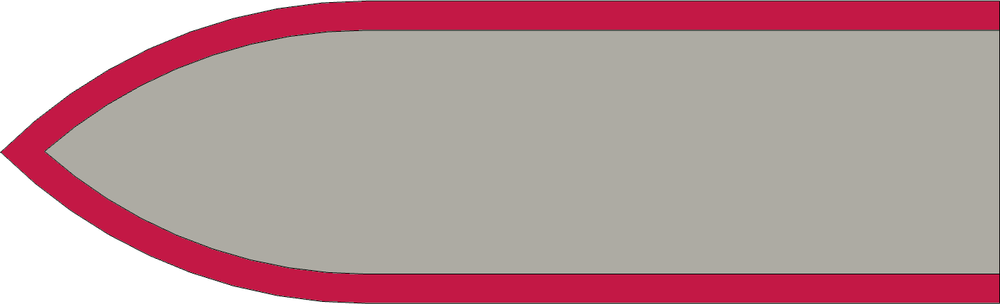
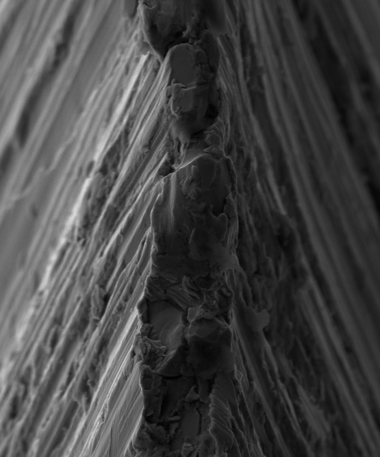
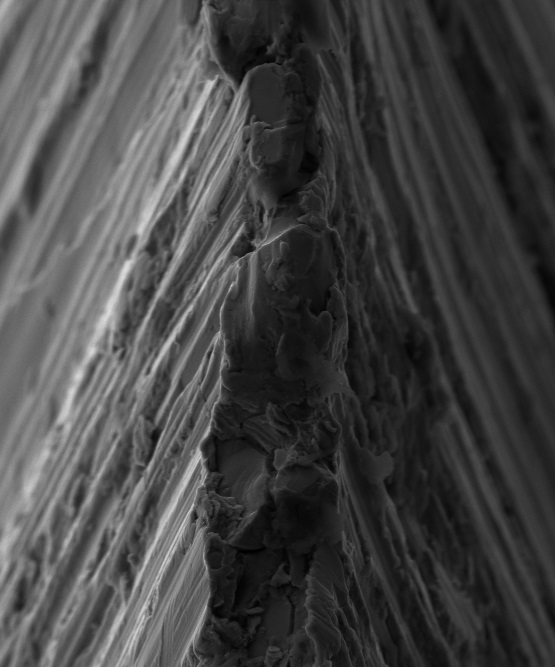

|
|
|
Outdoor & Pocket Knives |

Edge Angles
Outdoor & Pocket Knives get used to do work, and the guidance provided below is based on that.
A knife's worth is measured not by its blade alone but by the hands that hold it.
Anonymous
Guidelines shown below are for Included Angles (α). The Bevel Angle (β) is sometimes called “degrees per side” or DPS.
The sharpened edges are denoted in the pictures below using red.
|
General Guidelines |
|||
|
Blade Type |
Blade Thickness |
α |
Notes |
|---|---|---|---|
|

|
up to
|
23° - 24° |
The drop point blade is a very common blade shape. When there are two such blades in a pocket knife, the sharpener may wish to have a less acute angle on the shorter blade. This will be used more often for prying activities (despite all the recommendations to the contrary), or for cutting up stiffer materials like cardboard. A less acute angle will be less likely to dull as quickly. Victorinox recommends sharpening your Swiss Army Knife at 15°-20° per side (β). When sharpening a Swiss Army Knife (or knives with similar blades), no micro bevel is added. This is due to the blade's overall thickness being thinner (roughly 0.063" / 1.6mm). Morakniv knives are shipped with a Scandi Grind and often with a micro bevel. The resulting cutting edge angle is 35° - 45°. The micro bevel is 0.05 - 0.5 mm (0.002” - 0.020”) wide. This is done to make the edge less fragile and enable better edge retention. The Ka-Bar blade is sometimes called a Bowie blade, or a clip point blade. 
Gut Hook The Japanese tanto blades have a similar shape to the American tanto blade (shown), and should follow these same guidelines. Note: Some blades have a gut hook used for splitting the skin on a game animal when butchering in the field. Sharpening this concave edge requires a round slip stone or sandpaper wrapped around a dowel rod. |
|
1.6mm -
0.063” - 0.100” |
25° - 30° | ||
|
>2.5mm /
|
30° - 35° | ||
|
|
(any) | 30° |
This blade is often seen as an additional blade on a pocket knife, and oftentimes is shorter than the drop point blade. This blade is sharpened to a greater angle. This is to allow for its use on tougher materials. If the sharpener wants to add a micro bevel, an additional 2°-5° should be sufficient. |
|
|
(any) | 40° - 45° |
This is a blade often used for scraping actions. Thusly, it is sharpened to a higher angle, and no micro bevel is added. There are certain kitchen knives which have this shape, but they are sharpened differently. The kitchen knives page is useful for that. |
|
Hawkbill or Hook Blade |
(any) | (see above) |
Hawkbill Blade These can be folding or fixed knives. Recommended angles should follow the same guidelines as above for the drop point blades. |
| 40° - 45° |
Hook Blade These are not folding knives; rather they have a stout handle (usually wooden) into which a blade is affixed. They are often used in construction to cut vinyl flooring, tar paper for roofing, and drywall (AKA, Sheetrock). As they are used under such laborious working conditions, a greater angle is preferred for longer life of the cutting edge (and less beer at the end of the working day). |
||
Use the same α angle for both setting the apex angle, and for edge-leading honing (up to 8,000 grit).
|
Deburring Guidelines |
|||||
|---|---|---|---|---|---|
|
Type |
1st Deburring |
2d Deburring |
Notes |
||
|
Angle |
Grit size |
Angle |
Grit size |
||
| Harder steels | -0.2° | 3 - 6 µm | 5° | 0.25 - 0.5 µm | Edge Angle Stropping - for steels which are brittle, have high hardness, are high carbon or carbide steels. |
| Softer steels | 0° | 3 - 6 µm | 1.5° | 1 µm | High Angle Stropping - for steels which are tough or ductile, have low hardness or low carbon, or are fine carbide. |
Grit size measured in µm (aka, microns)
The shape of the grind used is a call best made by the tool's use, and also based on your own experience. Additional notes are available for Grind Profiles.
Blades with a concave edge need special attention when sharpening to not mess up the curved edge.
The YouTube video by Dr. Vadim Kraichuk, Sharpening knives with concave curves, is worth reviewing if you have questions on the approach to use.

Image 1

Image 2

Image 3

Image 4
Image 1: As the blade is resharpened over time, the blade's point will be raised. This is shown graphically in the image's progressively darker pink-to-red lines. Those lines show the metal being removed during the sharpening processes over time. And over that same time, the blade's point will be made to be above the knife's sides (the brown background) when the blade is closed into the handle. This is especially the case on drop point & spey point blades.
Image 2: This image shows the blade's point now above the knife's sides. This situation is problematic: I have pierced my thumb on the exposed point, and caught it on my trouser pocket.
Image 3: The solution to this problem is to reshape the top of the blade by grinding off some of the metal towards the blade's point. This is shown as the removal of the blue parts.
This picture shows a few things of note. Firstly, the 1st resharpening did not require a reshaping of the top as it did not take the blade's point above the side. But, as the blade is resharpened more, reshaping becomes also necessary. Maybe not every time, but certainly more than once.
Such steel removal (and repositioning of the blade's point) can often be the case when the blade requires great reshaping after damage to the cutting edge (e.g., when your father-in-law uses your knife to open a paint can).
Image 4: After grinding down the top of the blade, the blade's point is now below the knife's sides.
The YouTube video from Tormek, Tormek Live Sharpening Class - Part 15. Repair a damaged knife, shows this process and the video is worth viewing if this process is new to you.
Safety Note: Be careful when grinding down the top of the blade. You cannot push down on the blade's cutting edge to make it happen.
I've not found value in adding micro/secondary bevels to pocket knives which get used, especially knives with blades which fold into a handle. Thusly, it is not recommended here. That said, the honing steps may add a slight micro-bevel.
If the sharpener wants to add one, an additional 2° should be sufficient. (More notes are also available on a different web page for Micro / Secondary Bevels.)
The Knife Angle Setter jig is greatly useful if using the WM-45 Knife Jig to hold the blade.
I find that usage of calculators for setting specific angles to a high degree of accuracy is not critical. It is much more critical to resharpen often. If you choose to use a calculator to achieve a specific angle to a high degree of accuracy, there are a number of online calculators that can also be used for sharpening knives.
This information was posted on the Tormek forum and has been copied here as it is a good reference.
The diagram for the α and β angles is repeated to the right.
|
α |
β |
Comments |
|---|---|---|
| <20° | <10° |
Edges in this range are good for cutting softer materials. For example, razor blades are sharpened at angles of 5° to 9°. This results in a delicate edge which is easy to damage. |
| 20° - 30° | 10° - 15° |
Knife edges in this range of angles can be applicable in providing a smooth cutting action for knives which are used to slice meat or cut other soft items. This is why fine Japanese knives are usually sharpened is in this range. It is also common for some woodcrafts knifes and fillet knives. Do note:
|
| 30° - 34° | 15° - 17° |
With an α angle of 30° to 34°, these knives will cut quite easily. Japanese knives and newer Chef's Knives are usually sharpened at this angle from the factory. Although less durable than those with higher angles, their cutting power makes it an appropriate tradeoff. |
| 34° - 44° | 17° - 22° |
Knives in this angle are common in kitchens and outdoor activities. It is also a useful edge angle range for pocket knives. This is a common sharpening angle when you are looking for a general-use blade, and is the typical sharpening angle for most standard kitchen knives. These knives are often built of tough material that can withstand a sharpening edge of this angle and still cut well without any issue. |
| 44° - 60° | 22° - 30° |
Edges in this range are more durable, and are appropriate for forrest and hunting knives, pocket knives, and tougher applications. This is a typical edge angle for durable knives. |
| >60° | >30° |
Edges past 30° are very durable, although their cutting ability is significantly reduced. Most knives won't benefit from this sharpening angle. These angles are common in tools and cutting blade such as cleavers, machetes, and axes, especially as these tools are often made from softer steel. |
|
|
 

Click on either image for a bigger sized view.
Images courtesy Todd Simpson via Dr. Vadim Kraichuk of KnifeGrinders.
The scanning electron microscope (SEM) images to the right show the burr on a knife in the 1st image, that was then "ripped off" by cutting cross-grain into a piece of redwood in the 2nd image - loss of the sharp edge is obvious.
Key take-away from these photos : don't skip the honing step.